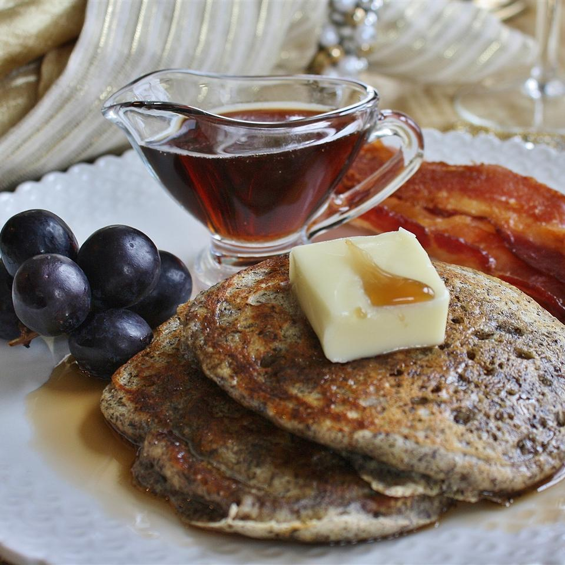

Buckwheat Pancakes

Description
These are delicious buckwheat pancakes that taste great with some butter and syrup or jam.
Ingredients
- 1 cup buttermilk
- 1 egg
- 3 tablespoons butter, melted
- 6 tablespoons all-purpose flour
- 6 tablespoons buckwheat flour
- 1 teaspoon white sugar
- ½ teaspoon salt
- 1 teaspoon baking soda
- 3 tablespoons butter
Steps
- In a medium bowl, whisk together the buttermilk, egg, and melted butter.
- In another bowl, mix together white flour, buckwheat flour, sugar, salt and baking soda. Pour the dry ingredients into the egg-mixture. Stir until the two mixtures are just incorporated.
- Heat a griddle or large frying pan to medium-hot, and place 1 tablespoon of butter, margarine or oil into it. Let the butter melt before spooning the batter into the frying pan, form 4 inch pancakes out of the batter.
Once bubbles form on the top of the pancakes, flip them over, and cook them on the other side for about 3 minutes. Continue with this process until all of the batter has been made into pancakes.